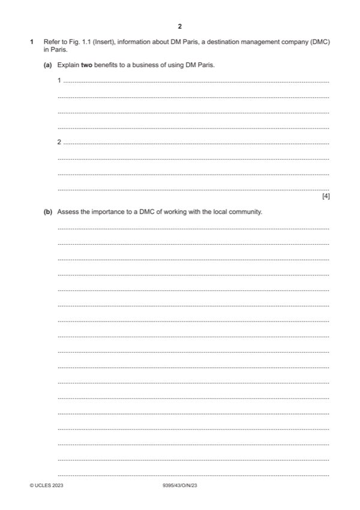

Question 1

Original paper page 2
Part 1(a) — solution
Explain two benefits to a business of using DM Paris 4
Award one mark for each of two identified roles, plus an additional mark for
explanation.
DM Paris can save time for a business by doing all the searching and
bookings [1] this gives security to a business who can use a trusted
organisation and do not have to worry about using their own staff [1]
Everything is planned and organised for them [1] DM Paris have expertise
and major contacts in the industry in Paris [1]
DM Paris have experience in organising and arranging services [1] this could
save a business money as DM will find the best deals and should not make
mistakes or double book.
Accept any reasonable interpretation.
2023 Page 6 of 10
9395/43 Cambridge International AS & A Level – Mark Scheme October/November
PUBLISHED 2023
Mark points
- Include the ideas shown in the solution above.
Part 1(b) — solution
- Prevents conflicts by developing good communication links
- Local community can help to provide local knowledge about different
- Helps to strengthen cultural identity and links
- Offer opportunity for good networking and finding contacts for different
- Helps with the reputation of a DMC, such as there may be an opportunity
- Prevents locals from losing their customs
- The local community will have a good understanding of Paris sharing and
Mark points
- Prevents conflicts by developing good communication links
- Local community can help to provide local knowledge about different
- Helps to strengthen cultural identity and links
- Offer opportunity for good networking and finding contacts for different
- Helps with the reputation of a DMC, such as there may be an opportunity
- Prevents locals from losing their customs
- The local community will have a good understanding of Paris sharing and
Part 1(c) — solution
- A (DMC) offers a variety of services to appeal to as many business
- To make themselves more marketable, strong USP and competitive
- To capture different types of business customers which will make them
- To keep good relationships with businesses, etc., by offering as many
- They offer many different transportation products that make life easier for
Mark points
- A (DMC) offers a variety of services to appeal to as many business
- To make themselves more marketable, strong USP and competitive
- To capture different types of business customers which will make them
- To keep good relationships with businesses, etc., by offering as many
- They offer many different transportation products that make life easier for